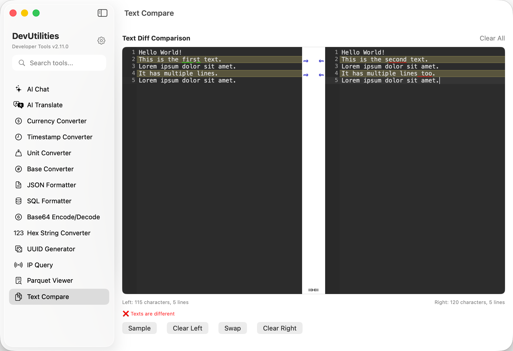

Text Compare Professional Side-by-Side Text Diff Tool
Compare two text documents side-by-side with visual diff highlighting and instant status updates. Perfect for code review, configuration file comparison, and spotting differences between any text files. Native macOS performance with CodeMirror-powered visual diff editor.
Real-time Status
Visual Diff Highlighting
Character & Line Metrics
